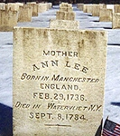
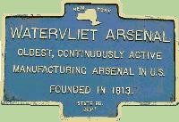

by
Stefan Bielinski
Watervliet is defined here as the part of Rensselaerswyck west of the Hudson and surrounding the city of Albany. The term seems to have appeared during the third quarter of the eighteenth century. It was referred to often but not definitively during the 1760s and 70s. In 1788, Watervliet was erected as a town, a separate jurisdiction within Albany County. In 1790, it had a population of 7,419 - more than twice that of the city of Albany. By that time many people who lived there pursued activities that fed directly into the Albany economy. This overview considers early Watervliet in its early Albany context.
By our definition, the town of Watervliet was all of Albany County on the west bank of the Hudson except for the city of Albany. In 1790, most of its people lived within a mile of the Hudson River north and south of Albany. In 1793, "Bethlehem" (located south of Albany) was detached and erected as a town on its own. Other detachments followed. During the 1820s, Watervliet still encompassed about fifty-three square miles. It was bounded by Albany to the south, the Hudson River on the east, and the north line of Rensselaerswyck (for ten miles along the Mohawk River). Historically, Watervliet has been known as "the Mother of Towns" in the Capital District.
Colonie ("the Colonie") would be incorporated as a municipality within Watervliet in 1791 and as a separate town in 1808. Over the last four decades, The Historical Society of the Town of Colonie and the Colonie Town Historian's office have sustained and even enhanced outstanding heritage services.
The Van Rensselaer Manor House (located about a mile north of the old Dutch Church), Schuyler Flats", the King's Highway, and Patroon's Creek are among the locations that can be explored further on this website.  These locations are shown on the Bleecker map of 1767. However, "Watervliet" was not then labeled as such. We still seek the earliest (or an appropriately early) cartographic representation of the term "Watervliet." The settlement made by the Shakers at Niskayuna in 1776 was frequently referred to as "Watervliet." However, the Shakers avoided the city of Albany and apparently its people as well. At this point, we have found that they played no role in the life of the city. Located just north of the original city line and situated on the Hudson River flood plain, the Quackenbush house is a historical landmark that survives today as the best example of eighteenth century city architecture.
In its Albany context, "Watervliet" means the overflow area north of the Foxes Creek ravine that ran along the river road to the Van Rensselaer Manor House. From the 1750s onward, it was a new settlement area populated by immigrants and newcomers who all would have been Van Rensselaer tenants. Some of their homes were shown a British army map dated 1758 and now preserved in the Library of Congress.
The first town meeting was said to have been held at the house of William Kane in April 1809.
 In 1813, the establishment of what became known as the "Watervliet Arsenal" provided the location with a national identity. Today, the city of Watervliet is located directly north of the densely settled, pre-industrial entity of the same name.
Watervliet is a Dutch word (I know this) meaning "water flood" - an apt appellation as the Hudson/Mohawk flood plain often was just that!
The most useful/accessible (but not error-free) sketch of the early history of Watervliet is printed in The Bicentennial History of Albany, 78-79. History of the City of Watervliet, N. Y. 163O to 1910 compiled by James T. Myers appears online in a number of formats. This entire complimentary but essential section must be developed further in the future.
first posted 3/10/01; revised 8/2/12; last updated 2/1/18